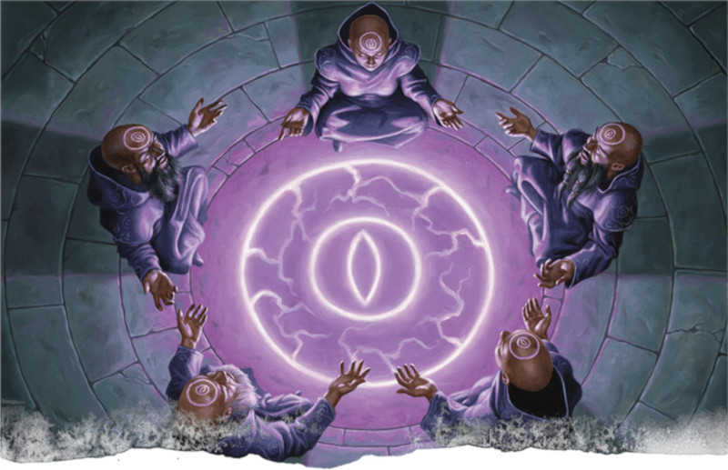

Domaine du savoir
Découvrons les secrets mystiques du domaine du savoir. Des clercs qui suivent des dieux du savoir comme Azuth et Oghma dans les Royaumes Oubliés, des dieux des secrets et des mystères comme Vecna dans Greyhawk, ou même des dieux de l'artisanat comme Reorx dans Krynn. Même les dieux qui poursuivent la connaissance comme un moyen de parvenir à une fin, tels les dieux de la magie Mystra dans les Royaumes Oubliés ou Boccob et Wee Jas dans Greyhawk, sont connus pour accorder à leurs clercs l'accès au domaine du savoir. Déroulez votre parchemin et préparez vos plumes : il est temps de découvrir le domaine divin du savoir.
Capacités du domaine du savoir
Un domaine divin est une suite de capacités intrinsèquement liées à un aspect de la divinité d'un dieu. Un dieu peut posséder de nombreux domaines au sein de son pouvoir expansif, mais un être mortel ne peut recevoir les pouvoirs que d'un seul. Les clercs qui reçoivent la puissance du domaine du savoir sont des personnes studieuses qui souhaitent apprendre, peut-être comme un moyen pour atteindre une fin, ou simplement pour acquérir des connaissances dans l'intérêt de savoir. Ces clercs acquièrent plusieurs capacités qui démontrent leurs connaissances du monde et leur aptitude à acquérir de nouvelles connaissances.
Les clercs gagnent leur domaine divin au niveau 1, ce qui contraste avec presque toutes les autres classes qui gagnent leurs sous-classes aux niveaux 2 ou 3. Ils gagnent cinq capacités de sous-classe aux niveaux 1, 2, 6, 8 et 17. En résumé, ces capacités de sous-classe permettent :
- De gagner la maîtrise de plusieurs matières académiques et de doubler votre bonus de maîtrise lors des jets d'Intelligence avec ces compétences.
- D'avoir toujours une sélection spécifique de sorts de domaine préparée.
- De canaliser le pouvoir divin de votre dieu pour acquérir temporairement la maîtrise d'une compétence ou d'un outil, ou pour lire l'esprit d'une créature et l'influencer magiquement.
- D'améliorer le pouvoir destructeur de vos sorts mineurs.
- De voir dans le passé.
Avantages du domaine du savoir
Le domaine du savoir accorde à ses clercs l'accès à des pouvoirs qui les rendent compétents dans le pilier de l'interaction sociale de D&D. Gagner une poignée de compétences supplémentaires, ainsi que la capacité de lire dans les esprits et d'influencer les gens magiquement, fait du domaine du savoir une option attrayante pour un clerc dans une campagne riche en intrigues (ou axée sur le jeu de rôle et les personnages). Cependant, ce n'est pas la seule chose dans laquelle ils sont bons. Si vous aimez creuser dans l'histoire et les secrets de votre monde de campagne (et vous serez alors probablement dans ce cas la personne la plus aimée par votre MD), le domaine du savoir facilite la découverte de ces informations secrètes.
Même dans une campagne riche en explorations de donjons, votre clerc du domaine du savoir peut découvrir des connaissances cachées qui pourraient aider votre groupe à prendre le dessus lors de la prochaine rencontre en découvrant la faiblesse du big boss ou en apprenant de veilles histoires mystérieuses qui pourraient aider votre groupe à éviter une crise plus tard dans la campagne. Ce rôle du clerc du domaine du savoir est bien adapté aux campagnes menées par un MD qui aime dissimuler des secrets et qui espère que les personnages essayeront de les découvrir.
Vos sorts de domaine prennent bien en charge ce rôle, avec des sorts comme communication avec les morts et augure qui facilite l'apprentissage d'informations au-delà de ce que l'environnement ou même d'autres PNJ pourraient vous dire. Votre domaine vous permet même d'accéder à quelques sorts sympathiques comme œil magique et confusion qui ne sont pas disponibles pour les autres clercs.
Inconvénients du domaine du savoir
Le domaine du savoir ne possède aucune capacité de classe qui tire la sous-classe vers le bas. Néanmoins, sa concentration sur l'interaction sociale peut rendre difficile sa contribution aux scénarios lorsque les piliers du combat et de l'exploration occupent le devant de la scène. Même dans des situations comme celle-ci, cependant, la liste de sorts du clerc est suffisamment ample pour que la simple préparation d'un éclair traçant, d'un bouclier de la foi et de quelques autres de combat vous permette de contribuer à toute situation délicate dans laquelle votre groupe se trouverait. Vous n'excellez pas au combat comme un clerc du domaine de la guerre, mais vous aurez toujours du punch en vous basant sur votre classe.
Le domaine du savoir vous encourage à investir dans la caractéristique d'Intelligence. Après tout, si vous voulez être un clerc intelligent qui connaît de nombreux mystères obscurs du monde, il est logique d'avoir une haute Intelligence. Malheureusement, mettre des points en Intelligence peut rendre difficile la survie sur le champ de bataille, déviant la spécialisation de cette sous-classe vers des campagnes avec peu de combats. Alors que de nombreux clercs acquièrent la maîtrise des armures lourdes qui compense une faible Constitution, le domaine du savoir ne vous accorde pas cet avantage. Alors, au lieu d'être en première ligne comme un clerc du domaine de la lumière ou de la guerre, vous serez mieux placé dans les derniers rangs du groupe, comme un magicien.
Exemple de personnage
Si vous jouez un clerc du domaine du savoir de niveau 1, vous devez choisir une race qui vous donne un bonus en Sagesse, comme un nain des collines. Les races avec des bonus que vous pouvez attribuer à n'importe quelle caractéristique, comme la variante de l'humain ou le demi-elfe, vous permettent également d’attribuer votre bonus de caractéristique à votre guise, tout en vous laissant acquérir d’autres traits utiles, comme la maîtrise de compétences supplémentaires. Après la Sagesse, l'Intelligence vous aidera à profiter de votre maîtrise des compétences comme Arcanes et Histoire. La Force vous aidera à mieux porter des armures intermédiaires et à utiliser des armes de corps à corps, tandis que la Dextérité vous aidera à mieux porter des armures légères et à utiliser des armes à distance et fines. Ce choix dépend de vos préférences personnelles.
Comme d'habitude, le background de votre personnage dépend de vous. De nombreux clercs ont l'historique d'acolyte et ont suivi une formation sacerdotale depuis leur naissance, mais d'autres ont eu la foi plus tard dans leur vie. Vous êtes peut-être un soldat qui a consacré des années de sa vie à un temple après avoir subi une terrible blessure et avoir survécu miraculeusement. Ou un charlatan qui a failli être lapidé dans les rues d'une ville et qui ne doit son salut qu'à la charité d'un humble clerc dont il est devenu l'élève.
Le choix de l'équipement lors de la création de votre clerc est une bonne idée. Étant donné que vous ne maîtrisez pas les armures lourdes et les armes de guerre, vous pouvez prendre une masse d'armes et une armure d’écailles (si votre Force est supérieure à votre Dextérité) ou une armure de cuir (si votre Dextérité est supérieure à votre Force). Des détails tels que le type de symbole sacré que vous portez sont des décisions esthétiques ; c'est selon vos goûts.
Sorts
En tant que clerc, vous disposez de la liste complète des sorts de clerc chaque fois que vous préparez vos sorts en début de journée. Néanmoins, quand on joue un clerc, on aime bien avoir une liste de sorts typique que le personnage a préparée ; cela évite d'avoir à resélectionner tous ses sorts au début de chaque journée. Étant donné que vous allez principalement jouer un rôle de soutien dans votre groupe, il sera utile d'avoir des sorts pour renforcer les alliés [buff] et affaiblir les ennemis [debuff]. Heureusement, vous disposez déjà de plusieurs sorts de cette nature préparés en permanence grâce à votre capacité Sorts de domaine.
En tant que clerc niveau 1, vous connaissez trois sorts mineurs et pouvez préparer un nombre de sorts de niveau 1 égal à 1 + votre modificateur de Sagesse. À ce stade votre modificateur de Sagesse devrait être de +2 ou +3, de sorte que vous serez en mesure de choisir trois ou quatre sorts de niveau 1 chaque fois que vous terminez un repos. En tant que personnage de soutien, le sort mineur assistance vous permettra d'avoir toujours un moyen d'aider votre groupe, car ce sort ne manque jamais d'utilisation. Mais même en tant que personnage de soutien, vous devriez avoir au moins un sort mineur offensif ; flamme sacrée est un bon choix. Ceci dit, vos sorts mineurs sont une question de préférence, et presque tous vous serviront.
Vous pouvez préparer n'importe quels sorts de niveau 1 à partir de la liste de sorts du clerc, mais vous pouvez utiliser la liste de sorts ci-dessous comme une base de sorts polyvalents qui vous serviront dans la plupart des cas. Quand vous aurez une idée plus précise des dangers auxquels votre personnage devra faire face au cours de l'aventure, vous pourrez personnaliser ces sorts. Essayez de choisir un sort de soutien, un sort défensif et un sort offensif. Si vous avez une Sagesse élevée et pouvez préparer des sorts supplémentaires, choisissez les autres comme bon vous semble. Cette liste n'est toutefois là que pour vous aider à démarrer si vous jouez un clerc du domaine du savoir pour la première fois. Avec l'expérience, vous pouvez bien entendu choisir d'autres sorts (notez que, grâce à vos Sorts de domaine, vous avez toujours les sorts identification et injonction préparés).
- Bénédiction (soutien)
- Blessure (offensif)
- Bouclier de la foi (défensif).
- Détection de la magie (exploration). Ce sort peut être lancé en tant que rituel, ce qui signifie que vous le lancez sans dépenser un emplacement de sort si vous passez 10 minutes supplémentaires pour le lancer.
- Éclair traçant (offensif)
- Fléau (défensif)
- Mot de guérison (soutien)
- Protection contre le mal et le bien (défensif). Ce sort requiert que vous ayez 25 po d’eau bénite, que le sort consume.
Dons
Au niveau 4, vous avez le choix entre Amélioration de caractéristiques et un don. Choisir Amélioration de caractéristiques permet d’augmenter une caractéristique de +2 (comme augmenter votre Sagesse de 16 à 18) ou augmenter deux caractéristiques de +1 (comme augmenter votre Sagesse de 15 à 16 et votre Intelligence de 13 à 14). Augmenter vos caractéristiques vous rend meilleur dans un large éventail de choses. Par exemple, augmenter votre Sagesse fait qu'il est plus difficile de résister à vos sorts, aide à toucher avec vos sorts et vous rend meilleur pour les jets de Sagesse.
Les dons, d’un autre côté, vous donnent une capacité spéciale qui pourrait être plus utile dans des circonstances particulières, contrairement à l’amélioration générale apportée par Amélioration de caractéristiques. La Sagesse est votre caractéristique la plus importante car elle gouverne votre capacité à lancer des sorts. Lorsque vous avez atteint 20 (la valeur maximale) ou même 18 (une très bonne valeur) dans cette caractéristique, vous voudrez sûrement choisir un don. Vous pouvez choisir n’importe quel don pour appuyer votre concept de personnage, mais certains dons seront sûrement plus utiles que d’autres.
Esprit affûté. Il s'agit d'un don de niche, mais thématiquement approprié pour un clerc du domaine du savoir. Cela vous donne un bonus de +1 en Intelligence et la particularité intéressante de pouvoir vous souvenir de tout ce que vous avez vu ou entendu au cours du mois dernier, entre autres.
Linguiste. Comme Esprit affûté, ce don de niche facilite encore plus votre rôle d'encyclopédie mortelle. Il peut être d'une utilité limitée dans les donjons, mais la capacité de connaître de nombreuses langues et de créer des codes secrets pourrait être inestimable dans une campagne riche en intrigues.
Chanceux. Ce don est toujours utile. C'est l'un des dons les moins intéressants mais des plus utiles du jeu. À vous de juger si c'est amusant ou non.
Amateur d'armures lourdes. Si votre MD ne vous laisse pas facilement vous positionner au dernier rang pour lancer des sorts tout en étant protégé par des guerriers, vous aurez peut-être besoin d'une armure lourde pour vous protéger. Ce don n'est toutefois pas indispensable.
Mage de guerre. En tant que personnage de soutien, vous lancerez beaucoup de sorts pour renforcer vos alliés, et bon nombre de ces sorts nécessitent que vous restiez concentré. La concentration peut être brisée si vous subissez des dégâts, mais Mage de guerre facilite le maintien de votre concentration après avoir subi des dégâts. Il présente de plus d'autres avantages précieux.

Basé sur un article de James Haeck, traduit par glooping et blueace